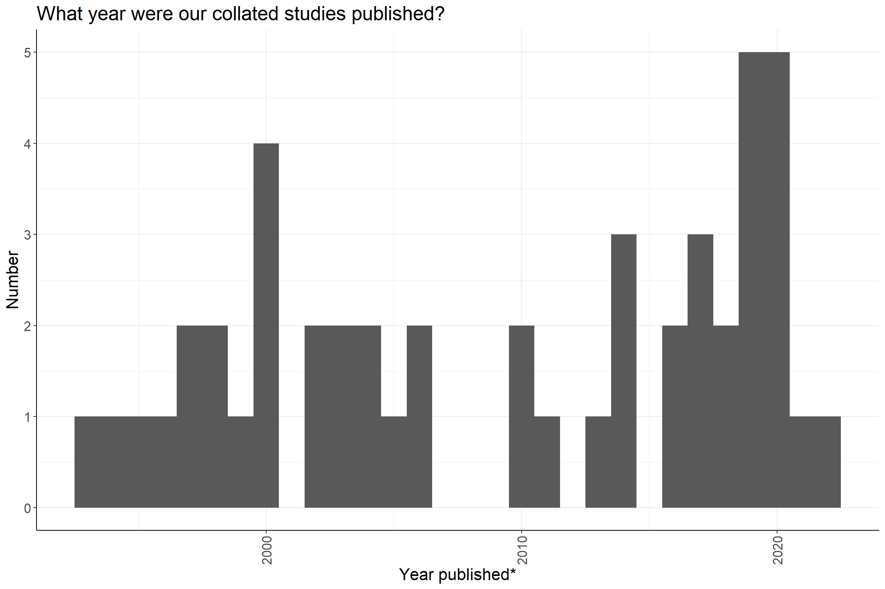
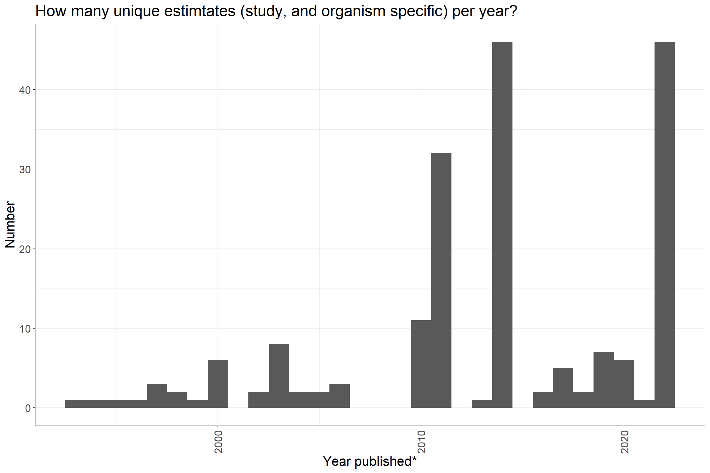
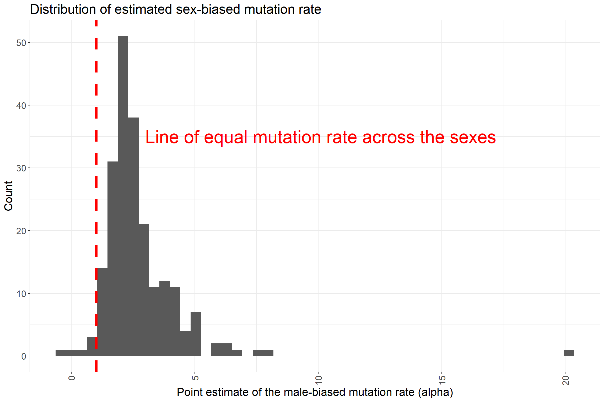
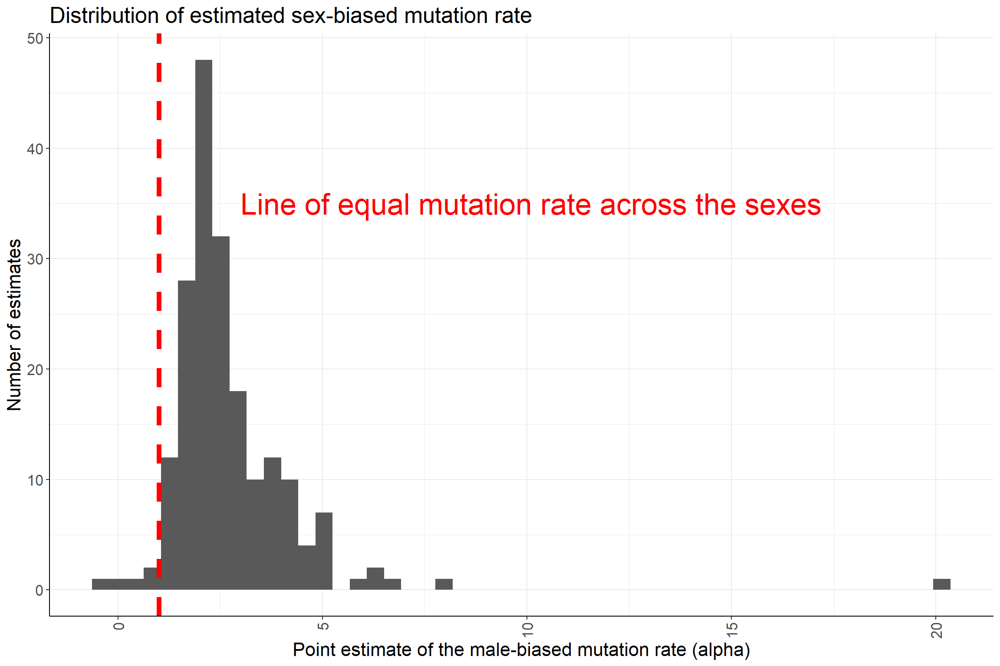
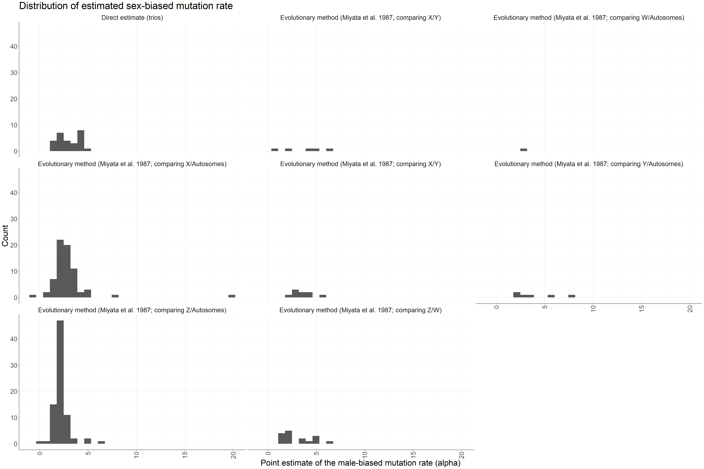

Last updated: 2022-02-06
Checks: 7 0
Knit directory: unguarded_x_journal_club/
This reproducible R Markdown analysis was created with workflowr (version 1.6.2). The Checks tab describes the reproducibility checks that were applied when the results were created. The Past versions tab lists the development history.
Great! Since the R Markdown file has been committed to the Git repository, you know the exact version of the code that produced these results.
Great job! The global environment was empty. Objects defined in the global environment can affect the analysis in your R Markdown file in unknown ways. For reproduciblity it’s best to always run the code in an empty environment.
The command set.seed(20211208) was run prior to running the code in the R Markdown file. Setting a seed ensures that any results that rely on randomness, e.g. subsampling or permutations, are reproducible.
Great job! Recording the operating system, R version, and package versions is critical for reproducibility.
Nice! There were no cached chunks for this analysis, so you can be confident that you successfully produced the results during this run.
Great job! Using relative paths to the files within your workflowr project makes it easier to run your code on other machines.
Great! You are using Git for version control. Tracking code development and connecting the code version to the results is critical for reproducibility.
The results in this page were generated with repository version 3751ab0. See the Past versions tab to see a history of the changes made to the R Markdown and HTML files.
Note that you need to be careful to ensure that all relevant files for the analysis have been committed to Git prior to generating the results (you can use wflow_publish or wflow_git_commit). workflowr only checks the R Markdown file, but you know if there are other scripts or data files that it depends on. Below is the status of the Git repository when the results were generated:
Ignored files:
Ignored: analysis/figure/
Note that any generated files, e.g. HTML, png, CSS, etc., are not included in this status report because it is ok for generated content to have uncommitted changes.
These are the previous versions of the repository in which changes were made to the R Markdown (analysis/sex_biased_mutation_rate.Rmd) and HTML (docs/sex_biased_mutation_rate.html) files. If you’ve configured a remote Git repository (see ?wflow_git_remote), click on the hyperlinks in the table below to view the files as they were in that past version.
| File | Version | Author | Date | Message |
|---|---|---|---|---|
| Rmd | 3751ab0 | Isobel Beasley | 2022-02-06 | Update workflowr page for sex_biased_mutation_rate |
| html | 1999cf4 | Isobel Beasley | 2021-12-10 | Build site. |
| Rmd | 5086eac | Isobel Beasley | 2021-12-10 | Include information on the data collated for sex-biased mutation rate |
| html | 93f651a | Isobel Beasley | 2021-12-09 | Build site. |
| Rmd | 5066bc3 | Isobel Beasley | 2021-12-09 | Update sex biased mut rate dist by method used calculate |
| html | a3e012c | Isobel Beasley | 2021-12-09 | Build site. |
| Rmd | af37ec4 | Isobel Beasley | 2021-12-09 | Include dist of sex bias est by taxo class |
| html | 31b9e9f | Isobel Beasley | 2021-12-08 | Build site. |
| Rmd | 3d510d6 | Isobel Beasley | 2021-12-08 | Add inital distribution graph of sex biased mut rate |
| html | a1238f3 | Isobel Beasley | 2021-12-08 | Build site. |
| Rmd | 51d2d42 | Isobel Beasley | 2021-12-08 | Publish inital webpages project |
Introduction This workflowr page contains investigations into Additionally - it illustrates how we produced Figure 1 for the paper.
library(ggplot2)
suppressMessages(library(dplyr))
library(reactable)Warning: package 'reactable' was built under R version 4.1.2library(tidyr)
# only look at public sheets - so no authentication is needed
googlesheets4::gs4_deauth()
# read in sex bias mutation data.frame
sex_bias_mut_df = googlesheets4::read_sheet("https://docs.google.com/spreadsheets/d/10ZVgeGlDpEnPG-4zLLrSBQjF7p2_9hzzIMPuIRuvogg/edit#gid=537547888", range = "Sex-bias estimates")v Reading from "Sex_bias_mutation_rate".v Range ''Sex-bias estimates''.# what does the sex bias in mutation rate estimate look like:
head(sex_bias_mut_df) %>% reactable()# Set up custom theme for ggplots
custom_theme <-
list(
theme_bw() +
theme(
panel.border = element_blank(),
axis.line = element_line(),
text = element_text(size = 16),
legend.position = "bottom",
strip.background = element_blank(),
axis.text.x = element_text(angle = 90, hjust = 1, vjust = 0.5)
)
)sex_bias_mut_df %>%
select(authors,year) %>%
distinct() %>%
nrow()[1] 46sex_bias_mut_df %>%
select(authors,year) %>%
distinct() %>%
ggplot(aes(x=year)) +
geom_histogram() +
custom_theme +
labs(x = "Year published*",
y = "Number",
title = "What year were our collated studies published?")`stat_bin()` using `bins = 30`. Pick better value with `binwidth`.
sex_bias_mut_df %>%
select(authors,year,scientific_name) %>%
distinct() %>%
ggplot(aes(x=year)) +
geom_histogram() +
custom_theme +
labs(x = "Year published*",
y = "Number",
title = "How many unique estimtates (study, and organism specific) per year?")`stat_bin()` using `bins = 30`. Pick better value with `binwidth`.
sex_bias_mut_df %>%
group_by(taxonomic_class) %>%
summarise(n = n()) %>%
reactable()sex_bias_mut_df %>%
group_by(method_used_to_calculate_alpha) %>%
summarise(n = n()) %>%
reactable(defaultPageSize = 50)sex_bias_mut_df %>%
group_by(loci_type_for_estimate) %>%
summarise(n = n()) %>%
reactable(defaultPageSize = 50)# Number of unique studies
sex_bias_mut_df %>%
group_by(authors,year) %>%
sample_n(1) %>%
ungroup() %>%
group_by(taxonomic_class,loci_type_for_estimate) %>%
summarise(n = n()) %>%
reactable(defaultPageSize = 50)`summarise()` has grouped output by 'taxonomic_class'. You can override using the `.groups` argument.sex_bias_mut_df %>%
group_by(taxonomic_class,method_used_to_calculate_alpha) %>%
summarise(n = n()) %>%
reactable(defaultPageSize = 50)`summarise()` has grouped output by 'taxonomic_class'. You can override using the `.groups` argument.sex_bias_mut_df %>%
ggplot(aes(x=alpha_point_estimate)) +
geom_histogram(bins = 50) +
labs(title = "Distribution of estimated sex-biased mutation rate",
x = "Point estimate of the male-biased mutation rate (alpha)",
y= "Count") +
custom_theme +
geom_vline(xintercept = 1, col = "red", linetype = 2, size = 2) +
annotate(
"text",
x = 3,
y = 35,
size = 9,
hjust = 0,
col = "red",
label = "Line of equal mutation rate across the sexes"
)
summary(sex_bias_mut_df$alpha_point_estimate) Min. 1st Qu. Median Mean 3rd Qu. Max.
-0.480 1.992 2.365 2.873 3.337 20.090 sex_bias_mut_df %>%
ggplot(aes(x=alpha_point_estimate)) +
geom_boxplot() +
custom_theme+
labs(title = "Distribution of estimated sex-biased mutation rate",
x = "Point estimate of the male-biased mutation rate (alpha)") sex_bias_mut_df %>%
group_by(authors,year,scientific_name) %>%
sample_n(1) %>%
ggplot(aes(x=alpha_point_estimate)) +
geom_histogram(bins = 50) +
labs(title = "Distribution of estimated sex-biased mutation rate",
x = "Point estimate of the male-biased mutation rate (alpha)",
y= "Number of estimates") +
custom_theme +
geom_vline(xintercept = 1, col = "red", linetype = 2, size = 2) +
annotate(
"text",
x = 3,
y = 35,
size = 9,
hjust = 0,
col = "red",
label = "Line of equal mutation rate across the sexes"
)
df= sex_bias_mut_df %>%
filter(alpha_point_estimate<20) %>%
ggplot(aes(x=alpha_point_estimate)) +
geom_histogram(bins = 25) +
labs(title = "Distribution of sex-biased mutation rate estimtates",
x = "Point estimate of the male-biased mutation rate (alpha)",
y= "Number of estimates") +
custom_theme +
geom_vline(xintercept = 1, col = "red", linetype = 2, size = 2) +
facet_wrap(~taxonomic_class)
n_by_taxa = sex_bias_mut_df %>%
group_by(taxonomic_class) %>%
summarise(n = n())
library(gridExtra)
Attaching package: 'gridExtra'The following object is masked from 'package:dplyr':
combinedf_2 = sex_bias_mut_df %>%
select(authors,year,scientific_name) %>%
distinct() %>%
ggplot(aes(x=year)) +
geom_histogram() +
custom_theme +
labs(x = "Year published*",
y = "Number of estimates",
title = "How many unique estimates per year?")
df_3 = sex_bias_mut_df %>%
select(authors,year) %>%
distinct() %>%
ggplot(aes(x=year)) +
geom_histogram() +
custom_theme +
labs(x = "Year published*",
y = "Number of studies",
title = "What year were our collated studies published?")
library(patchwork)
(df) / (df_2 + df_3)`stat_bin()` using `bins = 30`. Pick better value with `binwidth`.`stat_bin()` using `bins = 30`. Pick better value with `binwidth`.sex_bias_mut_df %>%
ggplot(aes(x=alpha_point_estimate)) +
geom_histogram() +
custom_theme +
facet_wrap(~method_used_to_calculate_alpha) +
theme(text = element_text(size = 25)) +
labs(title = "Distribution of estimated sex-biased mutation rate",
x = "Point estimate of the male-biased mutation rate (alpha)",
y= "Count")`stat_bin()` using `bins = 30`. Pick better value with `binwidth`.
df= sex_bias_mut_df %>%
filter(upper_lower_meaning == "Lower and upper estimates are the 95% confidence interval for alpha"|
upper_lower_meaning == "Lower and upper estimates are 2 standard errors from the mean (rough 95% confidence interval)") %>%
mutate(se = (alpha_estimate_upper - alpha_point_estimate)/2)
df %>%
select(taxonomic_class,se) %>%
mutate(row = row_number()) %>%
pivot_wider(names_from = taxonomic_class,
values_from = se,
values_fn = list)# A tibble: 118 x 6
row Mammalia Aves Amphibia Reptilia Insecta
<int> <list> <list> <list> <list> <list>
1 1 <dbl [1]> <NULL> <NULL> <NULL> <NULL>
2 2 <dbl [1]> <NULL> <NULL> <NULL> <NULL>
3 3 <dbl [1]> <NULL> <NULL> <NULL> <NULL>
4 4 <dbl [1]> <NULL> <NULL> <NULL> <NULL>
5 5 <NULL> <dbl [1]> <NULL> <NULL> <NULL>
6 6 <dbl [1]> <NULL> <NULL> <NULL> <NULL>
7 7 <NULL> <dbl [1]> <NULL> <NULL> <NULL>
8 8 <NULL> <dbl [1]> <NULL> <NULL> <NULL>
9 9 <dbl [1]> <NULL> <NULL> <NULL> <NULL>
10 10 <NULL> <dbl [1]> <NULL> <NULL> <NULL>
# ... with 108 more rows
sessionInfo()R version 4.1.0 (2021-05-18)
Platform: x86_64-w64-mingw32/x64 (64-bit)
Running under: Windows 10 x64 (build 19043)
Matrix products: default
locale:
[1] LC_COLLATE=English_Australia.1252 LC_CTYPE=English_Australia.1252
[3] LC_MONETARY=English_Australia.1252 LC_NUMERIC=C
[5] LC_TIME=English_Australia.1252
attached base packages:
[1] stats graphics grDevices utils datasets methods base
other attached packages:
[1] patchwork_1.1.1 gridExtra_2.3 tidyr_1.1.3 reactable_0.2.3
[5] dplyr_1.0.6 ggplot2_3.3.5 workflowr_1.6.2
loaded via a namespace (and not attached):
[1] tidyselect_1.1.1 xfun_0.24 bslib_0.2.5.1
[4] rematch2_2.1.2 purrr_0.3.4 gargle_1.2.0
[7] colorspace_2.0-1 vctrs_0.3.8 generics_0.1.0
[10] htmltools_0.5.1.1 yaml_2.2.1 utf8_1.2.1
[13] rlang_0.4.11 jquerylib_0.1.4 later_1.2.0
[16] pillar_1.6.1 reactR_0.4.4 glue_1.4.2
[19] withr_2.4.2 DBI_1.1.1 lifecycle_1.0.0
[22] stringr_1.4.0 munsell_0.5.0 gtable_0.3.0
[25] cellranger_1.1.0 htmlwidgets_1.5.3 evaluate_0.14
[28] labeling_0.4.2 knitr_1.33 crosstalk_1.1.1
[31] httpuv_1.6.1 curl_4.3.1 fansi_0.4.2
[34] highr_0.9 Rcpp_1.0.6 promises_1.2.0.1
[37] scales_1.1.1 googlesheets4_1.0.0 jsonlite_1.7.2
[40] farver_2.1.0 fs_1.5.0 digest_0.6.27
[43] stringi_1.6.1 grid_4.1.0 rprojroot_2.0.2
[46] cli_3.1.0 tools_4.1.0 magrittr_2.0.1
[49] sass_0.4.0 tibble_3.1.2 crayon_1.4.1
[52] whisker_0.4 pkgconfig_2.0.3 ellipsis_0.3.2
[55] googledrive_2.0.0 rstudioapi_0.13 assertthat_0.2.1
[58] rmarkdown_2.9 httr_1.4.2 R6_2.5.0
[61] git2r_0.29.0 compiler_4.1.0